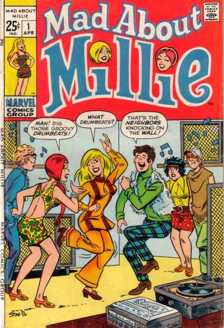

Mad About Millie

Series: 16 issues 1969-1970
Publisher: Marvel
Another Millie the Model title, this one with Archies artist Stan Goldberg.
Related Titles:
Millie the Model
#1-207 (1945-1973)
A Date with Millie
#1–7 (1956–1957)
A Date with Millie
vol. 2, #1–7 (1959–1960)
Life With Millie
#8–20 (1960-1962)
Modelling with Millie
#21–54 (1963–1967)
Mad about Millie
#1–17 (1969–1970)
Mad about Millie Annual
#1 (1971)
Chili, Millie's Rival
#1–26 (1969–1973)
Chili, Millie's Rival Special #1 (1971)
Millie the Model Annual
#1–10 (1962–1971)
Queen-Size Millie the Model
#11-12 (1974–1975)